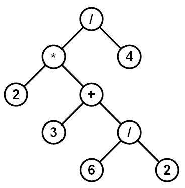

August, 2020 - December, 2020
 PHP/Javascript/HTML/CSS
PHP/Javascript/HTML/CSS
Worked with a group of three on a semester project that will be used by Indiana University - Purdue University
Indianapolis, It is a Project Judging System that can be used to help the committee of the school's competitions or hackathons.
Our team used PHP for all the backend functionality of the web app and JavaScript, HTML/CSS for building the frontend.
February, 2021 - May, 2021

C++
Implemented a program in C++ as a semester project that uses a tree-based evaluator to solve math expressions.
The program uses many design patterns such as the Composite Pattern, the Visitor Pattern,
and the Builder Pattern to design and implement this expression evaluator.
Java/SQL
Developed an application using Java and SQL Server to assist and help any committee of any chosen school and make
their blood donation process easier.The user will be able to interact with the program through the computer’s console,
all data will be manipulated, saved, and extracted from the database.
 C++
C++
Built a student record system in C++, the project's main purpose is to help universities manage files that are loaded with tons
of unorganized data easily, the program will simply take a file loaded with student data, organize it, and print a report of
every student into separate text files for different user needs, for example a report in alphabetical order or a simpler data
report with just first and last name. I've Created all the classes needed that will represent student data, and another to handle
other specific types of data including dates and addresses.
 Java Swing
Java Swing
Created Workout tracker GUI using Java Swing, The program will give a list of workouts to the user that they can chose from
and let's the user enter all the information of that spesific workout, then it will store it and create
a table using Jtables in Java Swing, to show progress and goals reached and track it everytime the program is used.
 Java
Java
Built a fully functional ATM system that the user can interact with in Java, Users are stored in a HashMap
table and retrieved with information by Administrator,CSV Bank Statements generator to achieve Easy transaction handling.